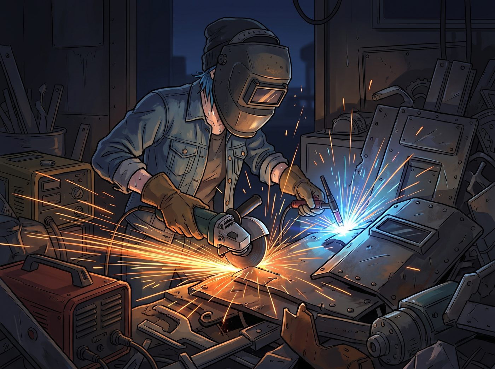
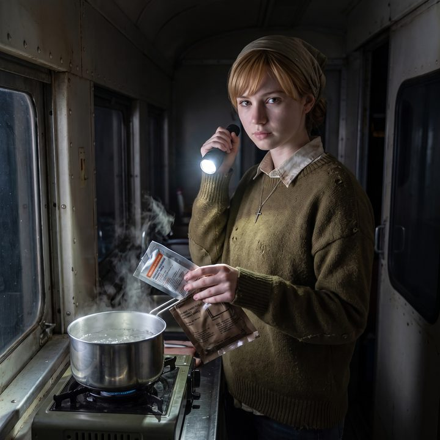
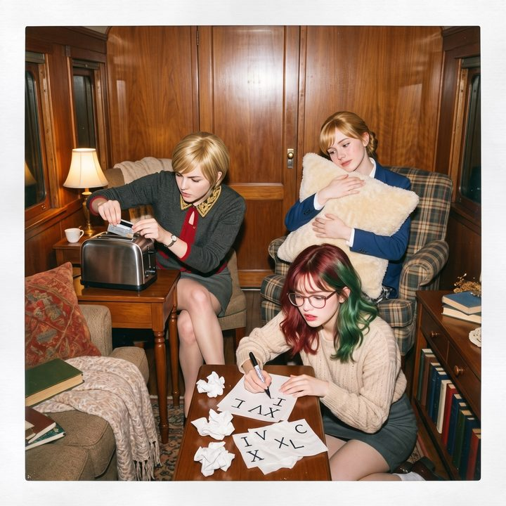
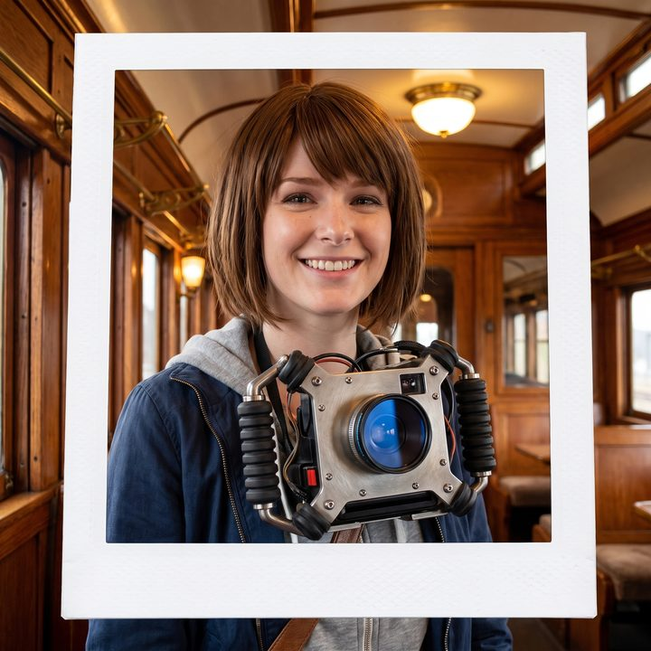

龐克圖騰與策展人




奧林匹亞半島的冷雨還在下。二號車廂外，猛禽皮卡底盤下傳來一陣咬牙切齒的扳手敲擊聲。
「三千五百美金的羊絨……頂級小牛皮……去妳的萬惡資本主義。」Chloe 躺在修車滑板上，狠狠地擰緊了一顆螺絲。雖然她心裡不得不承認，Max 穿上那雙老錢靴子後，在泥地裡蹦躂的樣子確實開心得像隻有了新裝備的松鼠，但她骨子裡那股屬於街頭龐克的自尊心，被 Victoria 狠狠地踩了一腳，現在正隱隱作痛。
一、藍領的硬通貨
「老娘雖然買不起義大利工坊的訂製，但在這片廢土上，機械和鋼鐵才是真正的硬通貨！」Chloe 吐掉嘴裡的棒棒糖棍，從車底滑了出來。她的目光鎖定了 Max 放在露營桌上的那台無螢幕數位相機。
這台重現了上世紀七零年代經典底片相機造型的玩具，雖然讓 Max 找回了盲拍的快樂，但它的機身充滿了廉價塑膠感。就在今天早上，Max 為了抓拍一隻樹蛙，差點手滑把它摔在石頭上，嚇得她驚呼了一聲。
「塑料殼子？一摔就碎的教具？」Chloe 嘴角勾起一抹狂野的冷笑，「Maxine，準備好迎接藍領重工業的愛吧。」
那晚，二號車廂的工作區火花四濺。Chloe 戴著電焊護目鏡，啟動了角磨機和小型氬弧焊機。她像個陷入狂熱的末日工程師，將一堆從廢棄發電機和防彈裝甲上拆下來的邊角料，進行了極其暴力的切割與重組。
二、阿卡迪亞灣防彈裝甲
第二天早晨，Max 在餐桌前喝咖啡時，一個沉甸甸的、散發著金屬冷光的物體，被砰地一聲砸在了她面前的盤子旁邊。
「這是什麼……？」Max 瞪大了眼睛。
原本那台充滿廉價復古感的相機，此刻已經徹底賽博龐克化了。Chloe 為它量身打造了一個全包圍式的戰術金屬兔籠。骨架是由航空級鈦合金銑削而成的，表面保留了粗獷的拉絲金屬紋理；四個邊角加裝了從軍用減震器上拆下來的高密度橡膠緩衝墊；而在那顆脆弱的塑膠鏡頭前，Chloe 甚至喪心病狂地焊上了一片從廢棄無人機傳感器上切下來的、帶有幽藍色鍍膜的防彈玻璃作為保護鏡。
「阿卡迪亞灣防彈裝甲Mark 1。」Chloe 雙手按在桌子上，滿臉機油，卻笑得無比囂張：「防水、防塵、防震。就算妳拿著它去拍核爆中心，或者用它去砸喪屍的腦袋，裡面的記憶卡也不會掉一根毛。」
Victoria 穿著真絲睡袍走過來，嫌棄地看著那個猶如微型坦克般的相機防護罩。「Chloe，妳是嫌 Max 脖子上的頸椎病還不夠嚴重嗎？這塊破銅爛鐵至少有兩磅重！」
三、砸不壞的證明
「醜陋？」Chloe 彷彿就在等她這句話。她猛地從 Max 手裡抓起那台全副武裝的相機，高高舉過頭頂，然後在所有人震驚的目光中，狠狠地將它砸向了二號車廂堅硬的金屬地板。
「噹——！！！」一聲震耳欲聾的鋼鐵交鳴聲。相機在地上劇烈地彈跳了兩下，沉重的鈦合金骨架在金屬地板上砸出了一個淺淺的凹坑。
Max 嚇得尖叫了一聲，趕緊撲過去撿起來。奇蹟般地，除了金屬兔籠邊緣多了一絲狂野的擦痕外，相機本體毫髮無損，連那片防彈保護鏡都光潔如新。Max 按下快門，喀嚓一聲，依然能完美運作。
「看到沒有，大小姐？」Chloe 居高臨下地看著 Victoria，眼神裡充滿了贏回場子的驕傲，「妳的羊絨靴子確實能讓腳趾頭舒服。但如果營地遇到襲擊，妳的義大利小牛皮擋不了一顆子彈！而我做的戰術裝甲，能讓 Max 在廢墟裡活下來！」
Victoria 氣得語塞，只能冷哼一聲：「野蠻人的審美。」
Max 雙手捧著那個沉甸甸的戰術相機，感受著金屬傳來的冰冷質感。雖然它真的有點重，但那種堅不可摧的安全感，以及金屬骨架上 Chloe 親手焊接的、略顯粗糙卻無比用心的紋路，讓她愛不釋手。
「謝謝妳，Chloe。」Max 將相機掛在脖子上，雖然被壓得微微低了一下頭，但她笑得無比燦爛。
四、被撤回的申請
就在 Chloe 得意洋洋地準備開一罐啤酒慶祝勝利時，一直安靜旁觀的 Lily 摸了摸那台金屬兔籠，眼神裡閃過精算師看到優質資產時的光芒。她琢磨著這套鈦合金骨架加軍規級防護玻璃的設計，或許可以打包成一份技術方案，去向後勤部門提交專利買斷申請，正準備動筆起草——
電視螢幕上，一則CNN的突發新聞打斷了她的思路。
五、CNN的警報
新聞標題用醒目的紅底白字寫著：聯邦全面徹查疫情紓困金詐欺，多名官員涉案被捕。主播正用嚴肅的語氣報導著某個主管採購的官僚，因為利用空殼公司騙取高階防護裝備補貼，現在已經被送進聯邦監獄去撿肥皂了。
看著新聞，Max 手裡那杯剛泡好的洋甘菊茶都在微微發抖。
她轉過頭，看著正準備完善那份專利申請的 Lily，大腦裡的被害妄想症瞬間拉響了最高級別的防空警報。
「Lily！停下！」Max 猛地衝過去，一把按住了 Lily 準備敲擊確認鍵的手，「取消申請！把那個什麼買斷協議撤回來！」
「Max 學姐，您是心律不整了嗎？」Lily 停下手，平靜地看著她，「這份方案的物理參數是真實的，合規流程也完美避開了利益衝突迴避條款。審批系統沒有亮任何紅燈。」
「我知道妳的黑魔法很完美，但是現在風頭太緊了！」Max 指著電視螢幕，語氣裡充滿了對強權機器的恐懼，「那些拿了補貼的官僚都在排隊進監獄！我們只是一群住在火車廂裡的平民，萬一哪天有審計員為了衝業績，查到我們用相機鐵殼換了半年的黑啤酒和修車工具，他們絕對會把我們這裡夷為平地的！我寧願喝白開水，也不想看到妳們穿著橘色囚服！」
「這在風險評估中叫作非理性合規恐慌。」Lily 嘆了口氣，雖然她有一百種方法證明這筆交易天衣無縫，但作為行政法務官，她必須優先考慮核心資產的心理健康閾值。
「好吧，如您所願。」Lily 乖巧地在鍵盤上敲擊了幾下，「申請已撤回。痕跡已抹除。我們依然是一群遵紀守法的、毫無建樹的透明人。」
六、失去啤酒的哀嚎
「不！！！」站在一旁的 Chloe 發出了一聲淒厲的慘叫。她彷彿看到了那輛裝滿了頂級工具和黑啤酒的補給卡車，在她的眼前化為泡影。「Max！妳太膽小了！那是我的啤酒！那是我的勞動成果！老娘的藍領尊嚴就這麼被CNN嚇沒了？！」
Chloe 痛苦地捂著臉，一屁股癱坐在沙發上，彷彿失去了一切世俗的慾望。
按照往常的劇本，這個時候，Victoria 絕對會端著她的氣泡水，用最惡毒、最居高臨下的腔調，對著空歡喜一場的窮鬼進行長達十分鐘的無情嘲諷。
然而，十分鐘過去了。沙發另一頭的 Victoria 出奇地安靜。她戴著一副防藍光眼鏡，正全神貫注地盯著手裡的平板電腦，手指在螢幕上飛速滑動，彷彿完全沒有察覺到 Chloe 的崩潰。
七、虛擬畫廊裡的秘密
「喂。」Chloe 皺起眉頭，心裡升起一股強烈的違和感。她用腳尖踢了踢 Victoria 的真絲睡袍下擺，「大小姐，妳啞巴了？我現在可是個痛失百萬合約的落水狗，妳居然不來踩我兩腳？」
「閉嘴，街頭混混。別打斷我的策展思路。」Victoria 頭也沒抬，語氣雖然依舊高傲，但卻少了一分刻薄，多了一分極度專注的狂熱。
Chloe 覺得更奇怪了。她小心翼翼地湊過去，探頭看向 Victoria 的螢幕。
螢幕上不是什麼當季高定型錄，而是一個極其專業的3D虛擬畫廊設計軟體。而在那個虛擬畫廊的純白牆壁上，掛著的，全都是 Max 在這幾個月裡拍下的照片。
有 Chloe 穿著沾滿泥巴的重型馬丁靴摔在泥坑裡的慘狀；有 Kate 在沒有電的廚房裡，用化學加熱袋熬煮軍糧肉醬時那種猶如末日聖母般的堅韌；有三個人因為疫苗腦霧而集體發瘋的荒誕瞬間；還有剛才 Max 脖子上掛著那個粗糙的戰術相機裝甲，笑得一臉燦爛的特寫。
「妳……妳在幹嘛？妳要拿 Max 的黑歷史去勒索她嗎？」Chloe 震驚了。
八、生存的張力
「妳這輩子都理解不了什麼叫作當代藝術的痛點，Chloe。」Victoria 終於放下了平板，摘下眼鏡，用一種看著無價之寶的眼神看著正在廚房裡洗杯子的 Max 的背影。
「現在外面的世界停擺了。紐約的畫廊、巴黎的展覽，全都死了。那些富豪和收藏家被關在比我們大一百倍的豪宅裡，每天看著無聊的抽象畫發瘋。他們不需要精緻，不需要矯揉造作，他們現在最渴望的，是生存的張力。」
Victoria 將螢幕轉向 Chloe，指著那張 Chloe 用噴槍烤起司吐司的照片：「看看這個。高溫、工業金屬、廉價碳水，以及人類在極端幽閉環境下為了活下去而爆發出的野性。Max 的這些寶麗來和無螢幕相機拍出來的粗糙顆粒感，完美地捕捉了這場全球瘟疫下的廢土日常。這不是黑歷史，這是絕對原生態的、帶著血肉溫度的紀實藝術。」
Chloe 愣住了。她第一次在 Victoria 身上，看到了除了傲慢之外的，屬於頂級藝術嗅覺的專業光芒。
九、隔離美學與生存的隱喻
「所以……」Chloe 嚥了一口唾沫，「妳打算怎麼辦？」
「我正在用我的家族信託，在西雅圖的地下藝術區收購一個廢棄的防空洞。」Victoria 嘴角勾起一抹極度自信的名媛微笑，眼神中閃爍著野心：「等封城一結束，我就要為 Maxine 舉辦她的第一場個人獨立攝影展。名字我都想好了，就叫隔離美學與生存的隱喻。妳那個被退回的相機鐵殼，我會把它作為裝置藝術放在展廳的正中央，標價五萬美金，並且標註不予還價。」
聽到五萬美金，Chloe 的眼睛瞬間瞪得像銅鈴一樣大。「五萬？！就那個我用廢鐵焊出來的破殼子？！」
「這叫藝術附加值，蠢貨。」Victoria 嫌棄地翻了個白眼，「妳的技術在軍方眼裡只是底層的廉價勞保，但在我的畫廊裡，它是反抗消費主義的龐克圖騰。」
十、通往未來的門票
這時，洗完杯子的 Max 擦著手走了過來。「妳們在聊什麼？Chloe，妳還在為啤酒生氣嗎？」
Chloe 猛地轉過身，一把抓住 Max 的雙肩，眼神狂熱得像個剛挖到金礦的淘金客。「Max！從今天起，妳什麼都不用幹！妳唯一的任務就是拿著相機拍我！拍我吃泥巴，拍我修車，拍我被實習生追債！我們發財了！我們要去防空洞裡辦展覽了！」
Max 被晃得頭暈眼花，一臉茫然地看向 Victoria。
Victoria 優雅地交疊起雙腿，端起氣泡水抿了一口，對著 Max 露出了一個難得真誠、且充滿了保護慾的微笑：
「Maxine，那些怕事又摳門的聯邦官僚不配擁有妳的作品。妳的才華，由我來定價。」
在二號車廂外依然下著冷雨的末日裡，沒有了政府的德國黑啤，但街頭龐克和文青攝影師，卻在一向高高在上的老錢名媛手裡，拿到了一張通往未來藝術世界的、最不可思議的門票。